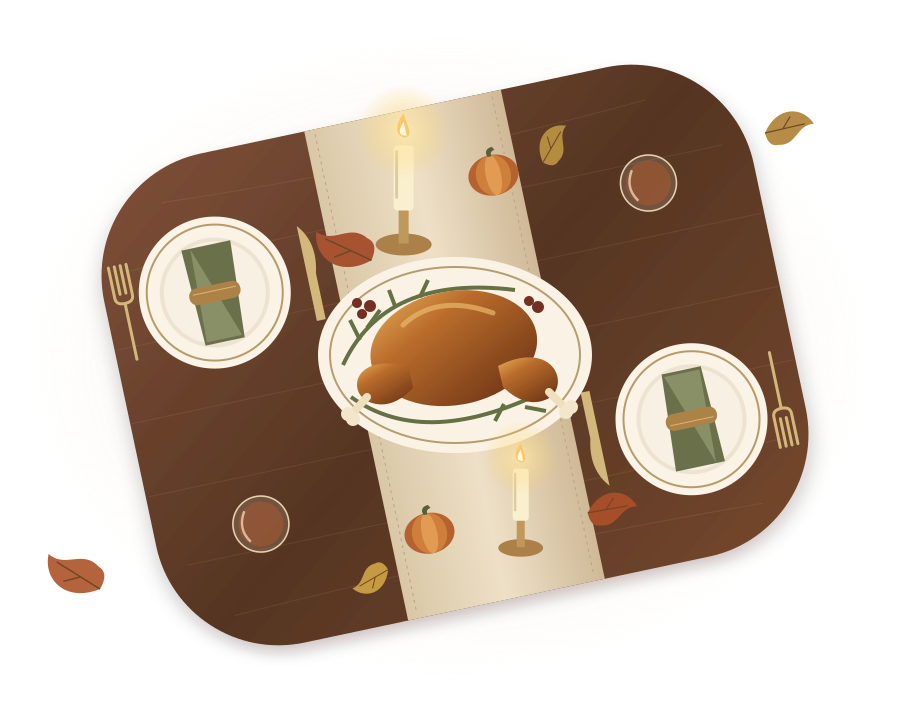

TUESDAY · NOVEMBER 24
The Balls arrive
Tuesday night brings the Ball family—and the start of our Thanksgiving gathering.
MARTINEZ · SALCEDO · BALL · STEELE
Four families, fifteen places, and plenty to share.
Thursday, November 26, 2026 · Dinner at 3:00 PM
See what we’re bringingA main dish. A side. Your favorite people.

COME HUNGRY. STAY AWHILE.MAKE YOURSELF AT HOME
TUESDAY · NOVEMBER 24
Tuesday night brings the Ball family—and the start of our Thanksgiving gathering.
THANKSGIVING MORNING
Start the day together with the Macy’s Thanksgiving Day Parade.
THURSDAY · 3:00 PM
Thanksgiving dinner for 15. Bring a main dish and a side; dessert is welcome, too.
AFTER THE FOOTBALL GAME
Once the football game wraps up, we’ll put on National Lampoon’s Christmas Vacation. Jammies welcome! Get cozy and come and go—a relaxed day together, not a strict schedule. Kids can enjoy a kids’ movie downstairs.
THANKSGIVING FOOTBALL · ALL TIMES PACIFIC
1:30 PM · FOX
Afternoon football before our 3:00 PM Thanksgiving meal.
Schedule: ESPN · November 26, 2026. Broadcast schedules may change.
A FEAST WE MAKE TOGETHER
Please bring a main dish and one or more sides. Dessert is welcome, too!
Text Sara with what you’re bringing, and she’ll have it added to the website.
Kaitlyn has moved back home and will be joining the Martinez family for Thanksgiving. Welcome home, Kaitlyn!
Suggested main: Beef
Side dish(es): To be decided
Dessert: Optional — to be decided
Suggested main: Turkey
Side dish(es): To be decided
Dessert: Optional — to be decided
Main dish: Likely salmon
Side dish(es): Iowa corn casserole
Dessert: Optional — to be decided
Main dish: To be decided
Side dish(es): To be decided
Dessert: Optional — to be decided
Drinks: Provided by Steele